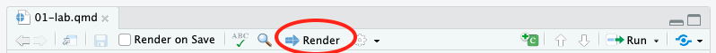

Module 1: Lab Handout
Purpose
The purpose of today’s lab is to review how to calculate and visualize descriptive statistics in R. This will not be a deep dive into the theoretical meaning behind descriptives, but rather a guide to some practical steps toward getting the most basic summary information out of a given dataset. We will also review the box and whisker plot and begin to practice constructing reports of our results in R.
Access the Starter Files for Module 1
Go to posit.cloud and then navigate to the course workspace via the left sidebar.
- Look for the course workspace called “Statistical Methods Spring 2025”
Open the project titled Module 1 This module contains the starter files that you will use for this lab and for your homework.
Starter Files
In the Files pane you should see these two R Notebooks:
- mod-01-lab-starter.qmd
- mod-01-hw-starter.qmd
Go ahead and open up mod-01-lab-starter.qmd. This is your “starter file” for today’s lab. You will build upon this document as you work on the exercises in this lab session.
Step 1: Update the YAML
In the YAML at the top of your .qmd file, change the author name to your name and put in today’s date.
Step 2: Render it!
Click the button called “Render” (circled in the image below) and then double check to see that your document rendered in the Viewer pane. It is always a good idea to occasionally check that the document still renders correctly after making changes.

Step 3: Load Packages
Today, we’ll be using the following packages:
- tidyverse: a collection of packages for doing data analysis in a “tidy” way
Please load these packages using the library() function.
Step 4: Read in the Data
The data we will use in Module 1 is from the 2015 World Happiness Report, an annual survey part of the Gallup World Poll.
Read in the data using the read_csv() function. Name the data “world.”
If you are having trouble reading in the data, remember that they are in the data folder!
Now, use the View() function to take a look at your data.
Why should we always take a look at the data after reading it in?
Exercise 1:
Calculate (individually) the mean, median, variance and standard deviation of the “Happiness” variable using the corresponding function in R. Use the following functions:
mean() median() var() sd()
Save your values as variables, as we’ll be using them in the write-up!
Exercise 2:
Construct a summary of the “Happiness” variable that contains each of the above parameters.
Exercise 3:
Create a histogram of the “Happiness” variable. Make sure to label your plot.
What do the descriptive statistics and histogram suggest about the shape of the “Happiness” distribution? Is it normally distributed or skewed in one direction? How can you tell?
Exercise 4:
Now, let’s examine the skew and kurtosis of the distribution!
First, we need to install and load the moments package.
Next, we can use the skewness() and kurtosis() functions to calculate these values.
Again, save your values as variables, as we’ll be using them in the write-up!
Skewness: Though this is counter-intuitive, negative skewness is indicated by higher (positive) values, while positive skewness is indicated by lower (negative) values. A skewness value between -1 and +1 is excellent, -2 to +2 suggest moderate skewness, and values beyond -2 or +2 suggest substantial non-normality.
Kurtosis: Positive kurtosis values indicate a more peaked distribution, while negative kurtosis values indicate a flatter distribution. Kurtosis values greater than +2 suggest that the distribution is too peaked and values lower than -2 suggest that the distribution is too flat.
For both skew and kurtosis, a normal distribution would have a value of 0.
Exercise 5:
Write up a summary of what you found. Make sure to include information about which measure of central tendency is most appropriate given the distribution. Use the variables you created earlier to insert the descriptive values directly into your summary.